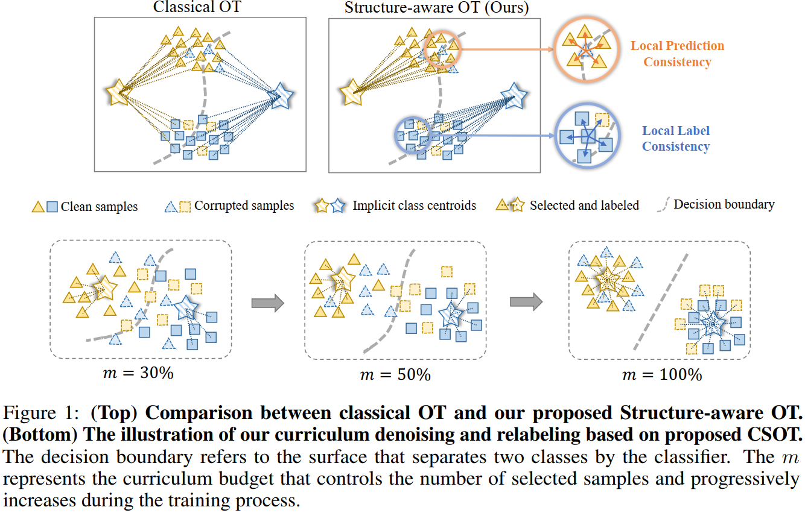

In this paper, we propose a novel optimal transport (OT) formulation for Learning with Noisy Labels (LNL), called Curriculum and Structure-aware Optimal Transport (CSOT). CSOT concurrently considers the inter- and intra-distribution structure of the samples to construct a robust denoising and relabeling allocator. During the training process, the allocator incrementally assigns reliable labels to a fraction of the samples with the highest confidence. These labels have both global discriminability and local coherence.

Cite our work
If you find this work useful in your research, please consider citing:
@inproceedings{chang2023csot,
title={{CSOT}: Curriculum and Structure-Aware Optimal Transport for Learning with Noisy Labels},
author={Wanxing Chang and Ye Shi and Jingya Wang},
booktitle={Thirty-seventh Conference on Neural Information Processing Systems},
year={2023},
url={https://openreview.net/forum?id=y50AnAbKp1}
}